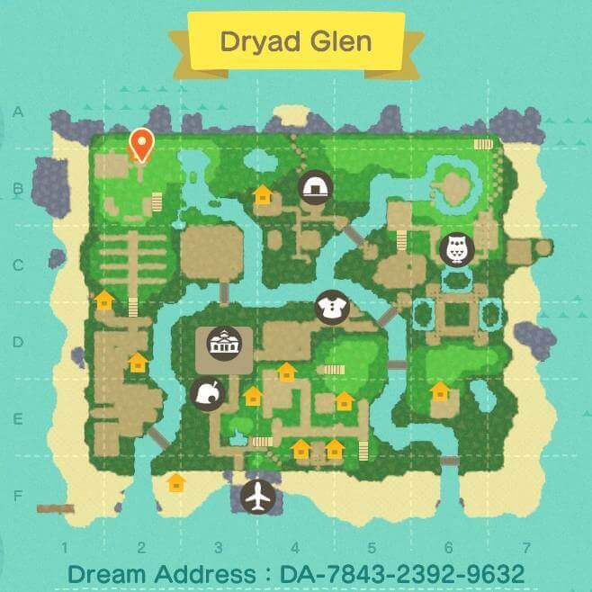
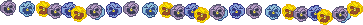
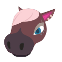
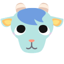
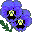

Once upon a time, at the beginning of a pandemic...
i like literally every other depressed, anxiety ridden person with a switch got animal crossing: new horizons. i'd actually never played any of the games before this (with the exception of pocket camp), and the game had been an early gift for my birthday. my job had moved me to work from home just weeks before i got it, but with a week of pto that i'd asked for months before a pandemic was even a whispered possibility and a new game everyone was raving about, i found a little bit of calm.
 and now we got pansies! we got pears! and in fact, we have a whole lot of things because i've sunk a lot of time into this game now, lol. i'm always amazed at some of the wild and crazy things people are able to create using the game features, but big and impressive aren't necessarily my forte. i like building little nooks or festival areas, and i'm happy to just let the flowers reclaim the little wilderness areas i've built. like 80% of my island is still a work in progress, and it's nice to have something to go tinker with rather than feeling i have to make the whole spectable right now! (which are much the same of my feelings about building this webssite too.)

current residents
 
former residents
